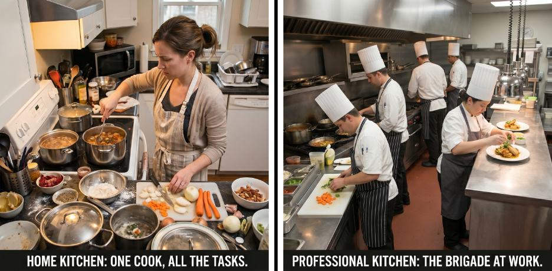
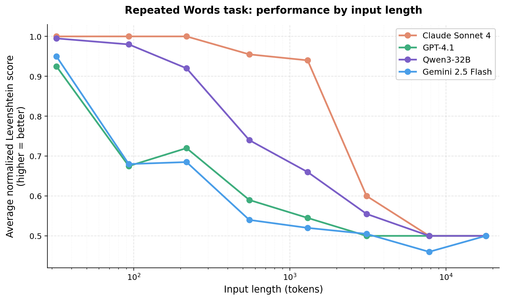

Picture a home cook hosting a dinner party for eight. One person doing the prep, the mains, the plating, greeting guests at the door, pouring wine, checking the oven. Ambitious and stressful to say the least. Unless you've hosted several of these, there's bound to be some mishaps.
Now picture the same meal coming out of a real kitchen for a full dining room. Smoother. More consistent. Same food, different "architecture". I have been watching a lot of Hell's Kitchen lately, which is probably what got me thinking about this. But the same question applies to how we build AI agents for real-world evidence work.

The memory problem nobody warned you about
Every large language model has a finite working memory, called a context window. As that memory fills up, something happens that researchers have started calling context rot (Figure 1). Retrieval gets weaker. Reasoning gets sloppier. The model starts inventing linkages between ideas that were never actually connected in the source material. This degradation starts well before the stated limit of the window, and it is measurable [1, 2].

It is worth pausing on how big those windows actually are now, because the numbers make the problem seem like it should have gone away. It has not.
Table 1. Frontier LLM context windows, as of April 19, 2026.
| Model | Standard context window | Extended / notes |
|---|---|---|
| Claude Opus 4.7 (Anthropic) | 1,000,000 tokens | 128K max output; available at standard API pricing [3] |
| Claude Sonnet 4.6 (Anthropic) | 1,000,000 tokens | Same 1M window as Opus 4.7 [3] |
| GPT-5.4 (OpenAI) | 272,000 tokens | 1,000,000 tokens available in Codex and via API configuration; prompts over 272K billed at a premium [4, 5] |
| Gemini 3 Pro (Google) | 1,000,000 tokens | 64K max output; multimodal including video [6, 7] |
| Gemini 3 Flash (Google) | 200,000 tokens | Optimized for latency and cost [7] |
For reference, a one million token window can hold roughly 1,500 pages of text, or 50,000 lines of code, or transcripts from more than 200 podcast episodes [6]. In other words, it is not the size that is the problem. The problem is that model accuracy and recall degrade as the window fills, regardless of how large the window is [1, 2]. A one million token ceiling is not a license to fill one million tokens. It is a ceiling, not a target.
For anyone in RWE, the analogy is familiar. Imagine asking an analyst to hold three study protocols, a 200-variable codebook, and a regulatory guidance document in their head while also writing the statistical analysis plan. Something gives. It usually is not the thing you would have guessed.
The MCP bloat problem
The Model Context Protocol, or MCP, is the emerging standard for connecting AI systems to external tools and data sources [8]. Connect ClinicalTrials.gov, PubMed, an internal data catalog, and a statistics engine, and you have real capability. However, the moment you connect those tools, their full definitions load into the model's context before you have typed a single question or query. A handful of connectors can consume tens of thousands of tokens before any work begins. Basically, you are already at a disadvantage.
The solo cook agent
There is one important caveat to consider: short versus long term tasks. The above does not apply if you are using LLMs as a replacement for [insert your favorite browser here]. However, when you start wiring in web searches, PubMed searches, evidence synthesis, cohort creation, etc., the work breaks down and efficiency dips. Now, the agent does not crash. It just gets sloppier, and the sloppiness is hard to see until you audit the output carefully. That is the dangerous failure mode in regulated RWE work.
The brigade
Restaurants solved a version of this problem over a century ago. Auguste Escoffier created something called the brigade de cuisine in the late 1800s, and the basic structure has held up because it works [9]. Gordon Ramsay did not invent it but it's demonstrated in his Hell's Kitchen show every week (granted: in the most entertaining way possible; idiot sandwich anyone? Lol).
The head chef holds the vision of the dish. A sous chef runs a station. A prep cook has one knife and one job. The expeditor at the pass checks every plate against spec before it leaves the kitchen. Front of house talks to the guests. Nobody tries to know everything. And that's the point.
Consider an agentic architecture. An orchestrator agent holds the plan and the vision. Specialist subagents get a narrow toolset and a fresh context window. Each one delivers a clean artifact that meets a defined contract, the way a plate either meets spec at the pass or goes back.
This pattern, variously called multi-agent orchestration or agent handoffs, is how the current generation of serious agent systems should be being built [10, 11].
Why this fits RWE workflows and processes
Our work is already multi-stage. Protocol development, feasibility, cohort construction, analysis, quality control, writeup, regulatory response. Different tools at every step. Different reference material. Different failure modes. Different "this is approved" or "this needs more work". Trying to cram all of that into one agent markdown file fights the shape of the work we already do.
The brigade model fits because we already think this way. We already have protocol writers, programmers, statisticians, medical writers, and QC reviewers. We already have a pass. We call it the QC review, or the sign-off. An agentic workflow for RWE work should mirror this workflow, not flatten it or silo it to one sole agent or chatbot.
What comes next
The interesting questions after you buy into the brigade model are operational. How do you define the contract between stations? What does a handoff schema look like in practice? When should a capability be a subagent versus a skill versus just a prompt?
For now, if your agent is trying to be the whole kitchen, it will cook like a home cook. Build the brigade, work the pass, and expect a "Yes, Chef" on every ticket.
References
- Liu NF, Lin K, Hewitt J, Paranjape A, Bevilacqua M, Petroni F, Liang P. Lost in the Middle: How Language Models Use Long Contexts. Transactions of the Association for Computational Linguistics. 2024;12:157-173. doi:10.1162/tacl_a_00638. https://aclanthology.org/2024.tacl-1.9/
- Hong K, Troynikov A, Huber J. Context Rot: How Increasing Input Tokens Impacts LLM Performance. Technical Report, Chroma, July 2025. https://research.trychroma.com/context-rot
- Anthropic. Context windows. Claude API Documentation. https://platform.claude.com/docs/en/build-with-claude/context-windows
- OpenAI. GPT-5.4 Model. OpenAI API Documentation. https://developers.openai.com/api/docs/models/gpt-5.4
- OpenAI. Introducing GPT-5.4. March 2026. https://openai.com/index/introducing-gpt-5-4/
- Google. Long context. Gemini API Documentation. https://ai.google.dev/gemini-api/docs/long-context
- Google. Gemini 3 Developer Guide. https://ai.google.dev/gemini-api/docs/gemini-3
- Anthropic. Introducing the Model Context Protocol. November 2024. https://www.anthropic.com/news/model-context-protocol
- Escoffier A. Le Guide Culinaire. Paris: 1903.
- Anthropic. How we built our multi-agent research system. https://www.anthropic.com/engineering/built-multi-agent-research-system
- Anthropic. Building effective agents. https://www.anthropic.com/engineering/building-effective-agents